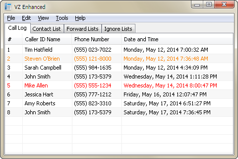

Version 1.0.2.8
Released on 7/18/2017
Version 1.0.2.3
Released on 7/18/2017
Please consider making a donation.
Your support is greatly appreciated.
ATTENTION: As of December 2nd, 2017, Time Warner Cable/Spectrum has shut down the service that VZ Enhanced relies on to perform its operations. If you have a 56K modem, then try out VZ Enhanced 56K instead.
VZ Enhanced is a caller ID notifier that can forward and block phone calls. It is a lightweight, feature-rich version of Time Warner Cable's VoiceZone™ Connect. Oh, and it's free.

VZ Enhanced requires a subscription to Time Warner Cable's Home Phone, or Business Class Phone services. You will also need an active Internet connection, though, it does not need to be through Time Warner Cable. Any Internet connection will do. Finally, you will need to register an account with Time Warner Cable if you do not already have one. You can register an account here: https://registration.timewarnercable.com/
Once you have all that squared away, you'll be able to log in. Upon starting VZ Enhanced, you will be prompted to enter the username (email address) and password that you created when registering an account. Enter this information and press the Log In button to log into the VoiceZone™ service. If successful, the login window will close and the main window will appear before you.
So now what? Well, just wait for someone to call. Incoming calls will appear in the Call Log and will be displayed in a specific color depending on any action that was taken against them. Normal calls will appear with black text, ignored calls will appear with red text, and forwarded calls will appear with orange text.
When you have an incoming call, you can right click the entry in the Call Log and choose to ignore or forward the incoming call. If you ignore the call, then you will be disconnected from the caller and your phone will stop ringing. If you forward the call, then you will be prompted for a number to forward the incoming call to. Once selected, the caller will be redirected to the forwarding number and your phone will stop ringing.
Of course you don't have to manually do any of this. VZ Enhanced has four supplementary lists that can automate the process of ignoring or forwarding incoming calls. This is a great way to fight back against annoying telemarketers. Select either the Ignore Lists or Forward Lists tab from the main window to access these features. Right click a list to add an entry. The ignore phone number list will prompt you for a phone number to automatically ignore whenever that number calls. The forward phone number list will prompt you for two phone numbers. The first is the incoming phone number and the second is the phone number you want to forward the incoming number to. You can ignore or forward an incoming phone number based on the caller ID name as well. Select the ignore or forward caller ID name lists to add entries.
If you would like to ignore or forward a range of phone numbers (up to 15 digits), you can specify a wildcard value '*' in replace of a digit. For example, suppose you want to ignore a 10-digit phone number with an area code of 555. In the ignore text box you would type the following: 555******* This represents a range from (555) 000-0000 to (555) 999-9999. In total, 10 million numbers will be blocked by using this example. Pretty cool, huh?
Now here's something even cooler. The following four entries will block all invalid 10-digit US phone numbers. These particular phone numbers are guaranteed to be fake and can be outright ignored without consequence.
0*********
1*********
***0******
***1******
These four entries will block 3.6 billion potential telemarketers.
It should be noted that the ignore lists have precedence over the forward lists. What this means is that if the same number is in an ignore list and a forward list, then it will be ignored first and not forwarded. It makes sense that if you want it ignored, then you won't be able to forward it. Furthermore, the phone number lists have precedence over the caller ID name lists.
Another thing to note with regard to ignoring calls is that after the call has been disconnected, the caller will still hear their phone trying to call you. It will only end when they hang up. The beauty of this, especially if they're a telemarketer, is that they'll waste their time trying to get a hold of you. Time is money and they don't have that to waste. As a result, if they're smart, they'll take you off their spam lists.
VZ Enhanced can also make calls directly from your computer. Select from the main menu: Tools > Dial Phone Number... A prompt will display asking for the phone number you wish to call. Once selected, your phone will ring. When you pick up your phone, you will then be connected to the selected phone number.
VZ Enhanced has various options to configure the behavior of the program. The options can be accessed from Tools > Options... The first tab that appears is the General tab. In it you can choose to display the System Tray icon which will generally appear on the lower right corner of the taskbar (next to the clock). The program can be set to minimum to the System Tray instead of to the taskbar and close to the System Tray instead of exiting the program. The Silent startup option causes the program to be hidden in the System Tray when it's loaded. This way you don't have to hide or minimize the program while it logs in. Always on top will cause all the program's windows to appear on top of every other program's windows. Enable Call Log history will save the entries in the Call Log so that they can be loaded the next time the program starts. If left unchecked, then any Call Log history will be lost. Finally, the Log events to Message Log will log various events such as connection attempts and list modifications to the Message Log. You can access the Message Log by clicking the View > Message Log menu.
The Connection tab handles connection related settings. When already logged in, the Automatically log in checkbox becomes available. Just as it says, it'll allow the program to automatically log in without you needing to enter your username and password. Reconnect upon connection loss determine how many reconnect attempts are made to establish a connection. You may want to set this to a large value if you're on a flaky wireless connection. Enable contact picture downloads will download any contact pictures that have been assigned to your contacts. The Timeout setting determines how long (in seconds) a connection will attempt to connect before it fails. As with the reconnection attempts, you may want to set this to a large value if you're on a flaky wireless connection. The SSL / TLS version is used to change the encryption protocol version. It should be left as TLS 1.0. Finally, you can Check for updates upon startup to see if there's any updates for VZ Enhanced.
The Popup tab will allow you to Enable popup windows and configure their appearance. You can change the popup's width, height, position, transparency, how long it's displayed for, whether it has a border, displays a contact picture, and if it should have a ringtone played. To allow the program to load ringtone files, create a folder called ringtones in the same directory as VZ_Enhanced.exe, and copy to it any .wav, .mp3, or .mid audio file. Per-contact ringtones can be set when adding or editing contacts in the Contact List. The other popup options allow you to change the order of the text that's displayed, their font attributes and the popup window's background color. You can preview the popup by clicking the Preview Popup button.
The optional web server plugin is provided to allow access from a web browser. The Call Log, Contact List, Forwards Lists, and Ignore Lists are loaded when connected to the website it serves. Incoming calls will also be displayed and can either be ignored or forwarded. The website can be accessed on smartphones (iPhone, Android, etc.) too. If, for example, you're away from home, you can have an incoming call be sent directly to your smartphone by using the forwarding feature.
Getting the web server up and running can be a bit tricky, given all of the settings that are provided, but it should just be a one time process. The first thing you'll need to do is to place the Web_Server.dll file and htdocs folder into the same directory as VZ_Enhanced.exe. By doing so, VZ Enhanced will be able to load the web server so that all the necessary options and menus can be accessed. Be sure to restart the program if it's already running. If everything was loaded successfully, then you'll be able to access the web server's options by selecting Tools > Options... from the main menu and then clicking the Web Server tab in the options window.
To enable the web server, put a check in the Enable web server checkbox. This will allow you to access its settings and to configure the web server. The first item that'll need to be configured is the Hostname / IPv6 address or IPv4 address and the Port number. By default, the hostname will be set to localhost and the IPv4 address will be set to 127.0.0.1. These two values are generally equivalent. In other words, if you type either of them into a web browser's URL bar, they'll access the same website (assuming you have a web server that's serving a website for those URLs). Now, these values will only allow you to access the website from the computer in which the web server is running. Thus the reason for it being call the local - host. If you want it to be accessible to any device connected to your home network (assuming you have a router), then you'll need to find out the IP address that your router has assigned to the computer that is running the web server. The IP address might look something like: 192.168.1.100. A quick way to figure out what your router supplied IP address is, is by opening up a command prompt and typing ipconfig. It should list the IP address on the IP Address or IPv4 Address row. When you've entered the appropriate hostname or IP address, then you'll need to configure the port. By default, HTTP traffic is done through port 80 and HTTPS (secure HTTP) is done through port 443. You need not change these unless either of those ports are in use or blocked for some reason. If you want the website to be accessible to any device (not just those connected to your home network), then you'll need to forward (in your router) whatever port you've selected for the web server. Doing so will allow a smartphone, for example, to access the website.
The Document root directory is where all the web content (web pages, images, scripts, etc.) are served from. If you placed the htdocs folder in the same directory as VZ_Enhanced.exe, then the directory path should already be set. If not, then you'll want to choose the location of the htdocs folder.
By selecting Require authentication and choosing an appropriate username and password, the website will prompt for that username and password in order to access it.
Verify WebSocket origin ensures that the WebSocket connection (which provides real-time updates) is established from the hostname or IP address that was chosen above. If any other website on the Internet should try to connect to the web server and it doesn't match the hostname or IP address, then the WebSocket connection will be denied.
Allow Keep-Alive requests will cause connections to the web server to remain open temporarily so that any further requests for web content might reuse the connection.
Start web server upon startup should be fairly self-explanatory. If checked, the web server will start itself when VZ Enhanced is loaded.
The Resource cache size is used to determine the maximum amount of memory (in bytes) that the web server will use to store resource requests. A resource request is a request for web content like web pages, images, scripts, etc. By storing these requests in memory, they can be accessed quicker than having to read them off of a hard drive every time they're requested.
The Thread pool count is the number of threads (which allow for simultaneous processing) that the web server will use. By default, it'll be equivalent to the number of processors on your computer and have a maximum value of twice that.
The last section of web server settings deals with encryption. By checking Enable SSL / TLS you can load your security certificate files and choose the appropriate SSL / TLS version to allow for HTTPS connections. The security certificate files can be in the form of either a PKCS #12 file, or a public and private key pair. If the PKCS #12 file has a password associated with it, then you'll want to enter the password in the password text box. Creating a security certificate is somewhat involved, but there are plenty of guides online. Do a Google search for "Create a self-signed certificate with OpenSSL" and it should explain things better than I could.
Finally, the SSL / TLS version is the security protocol version that'll be used to transmit the encrypted data. I would recommend using TLS 1.0 or higher.
At this point, if everything is configured correctly, you'll want to start the server. To do so, click on the Tools > Web Server > Start Web Server menu. If it works, then you should be able to access the Connection Manager from the same menu. More to the point, you'll be able to access the web site through your web browser. The Connection Manager will show you all of the active connections to the web site and you can close any of them by right clicking on an entry and selecting Close Connection.
Phew, that was long.